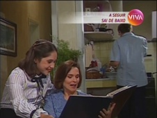
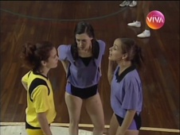
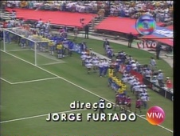
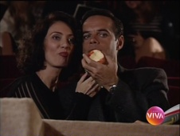
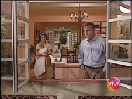
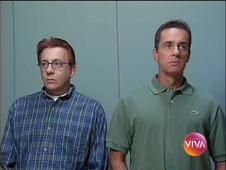
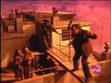
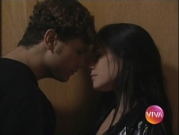

A Comédia da Vida Privada
| EPISÓDIO | EXIBIÇÃO | REPRISE | |||
|---|---|---|---|---|---|
| 000 | 0x00 | "A Comédia da Vida Privada" adaptado por Jorge Furtado, Guel Arraes e João Falcão direção Guel Arraes com Débora Bloch, Fernanda Torres, Malu Mader, Marco Nanini, Paulo Betti e Tony Ramos |
23/08/1994 | 19/09/2010 | |
| 1ª TEMPORADA - ANO 1 - 1995 | |||||
| 001 | 1x01 |  | "Pais e Filhos" adaptado por Jorge Furtado e Guel Arraes direção Guel Arraes narração Paulo José com Marco Nanini, Louise Cardoso, Enrique Díaz e Patricia Perrone |
25/04/1995 | 22/05/2010 |
| 002 | 1x02 |  | "Casados X Solteiros" adaptado por Jorge Furtado e Guel Arraes direção Guel Arraes com Antônio Fagundes, Cláudia Abreu, Daniel Dantas, Fernanda Torres, Giulia Gam e Marco Nanini |
23/05/1995 | 23/05/2010 |
| 003 | 1x03 |  | "Apenas Bons Amigos" adaptado por Jorge Furtado, Pedro Cardoso e Guel Arraes direção Jorge Furtado com Diogo Vilela, Fernanda Torres, Paulo Betti, Pedro Cardoso e Rogério Cardoso |
20/06/1996 | 30/05/2010 |
| 004 | 1x04 |  | "A Casa Dos Quarenta" adaptado por Jorge Furtado, Guel Arraes, Pedro Cardoso e Nelson Nadotti direção Guel Arraes com Marco Nanini, Eliane Giardini, Paulo Betti, Diogo Vilela e Mylla Christie participação especial Fernanda Montenegro |
04/07/1995 | 06/06/2010 |
| 005 | 1x05 | "Sexo na Cabeça" adaptado por Alexandre Machado, Pedro Cardoso, Jorge Furtado, Fernanda Young e Guel Arraes direção Mauro Mendonça Filho com Alexandre Borges, Cláudia Abreu, Giulia Gam, Marisa Orth e Pedro Cardoso |
08/08/1995 | 13/06/2010 | |
| 006 | 1x06 |  | "Mãe é Mãe" adaptado por Pedro Cardoso, Jorge Furtado e Guel Arraes direção Guel Arraes com Marieta Severo, Murilo Benício, Patrícia Perrone e Enrique Díaz participação especial Marco Nanini |
03/09/1995 | 20/06/2010 |
| 007 | 1x07 |  | "Menino ou Menina" adaptado por Guel Arraes, Pedro Cardoso, Fernanda Young e Alexandre Machado redação final João Falcão direção João Falcão com Cláudia Raia, Débora Bloch, Diogo Vilela, Fernanda Torres, Luiz Fernando Guimarães e Marco Nanini |
07/11/1995 | 27/06/2010 |
| 008 | 1x08 |  | "O Pesadelo da Casa Própria" adaptado por Jorge Furtado, Alexandre Machado e Fernanda Young redação final Pedro Cardoso e Guel Arraes direção Mauro Mendonça Filho com Marco Nanini, Adriana Esteves, Louise Cardoso e Pedro Cardoso |
12/12/1995 | 04/07/2010 |
| 2ª TEMPORADA - ANO 2 - 1996 | |||||
| 009 | 2x01 | "A Próxima Atração" de Jorge Furtado colaboração Luís Fernando Veríssimo e Guel Arraes direção Guel Arraes com Andrea Beltrão, Cláudia Abreu, Marcos Palmeira e Pedro Cardoso |
02/03/1996 | 11/07/2010 | |
| 010 | 2x02 |  | "O Grande Amor da Minha Vida" de João Falcão e Guel Arraes colaboração Alexandre Machado e Fernanda Young direção João Falcão com Selton Mello e Alessandra Negrini |
30/04/1996 | 26/09/2010 |